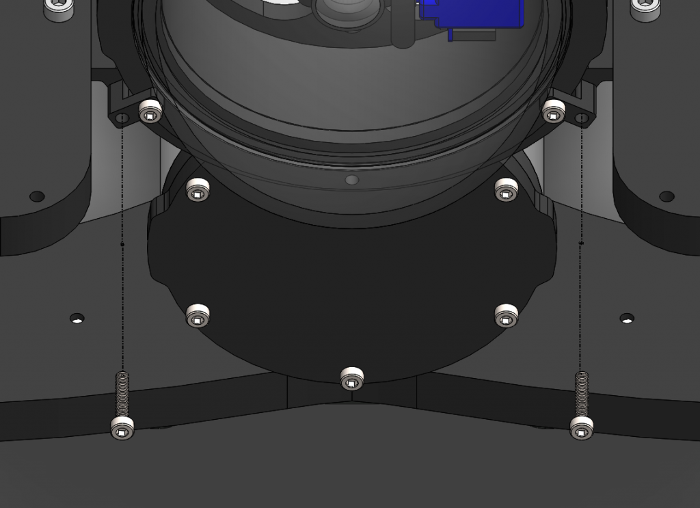
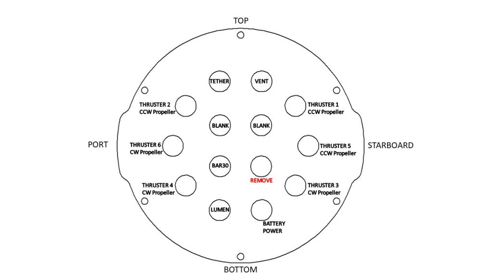
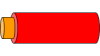
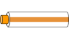

BlueROV2 integration
Introduction
The Water Linked DVL-A50 is designed to integrate with most ROVs and AUVs through ethernet and/or a serial interface (UART). To minimize the time between a customer gets the DVL-A50 and to having it up and running on their hardware platform, the DVL-A50 is shipped with an attached IO interface providing ease of connectivity with power, ethernet and serial. However, for most ROVs and AUVs the DVL-A50 has to be integrated with the on-board electronics through a penetrator or a subsea connector.
This guide details how the DVL-A50 can be integrated with the BlueROV2.
Parts and tools
What parts and tools needed depends on whether you intend to permanently attach the DVL-A50 to the BlueROV2, have it semi-permanently attached, or use a subsea connector for quick installation/removal.
This guide details how to permanently attach the DVL-A50 to a BlueROV2.
You will need


- DVL-A50 Bracket. This is optional, but protects the DVL-A50 and allows for down to 0 cm minimum altitude.
You will also need:
- Hex Key Set from Blue Robotics
- Penetrator Wrench from Blue Robotics
- M10 Cable Penetrator for 6mm Cable from Blue Robotics
- Potting compound (possible options in appendix A)
- (Optional) Potting kit from Blue Robotics
- Silicone grease
- 5 mm universal drill bit
- 2 x M5x12 mm stainless steel pan head screws (included with BlueROV2 mounting bracket)
- 4 x M3x4 mm stainless steel countersunk flat head screws (included with BlueROV2 mounting bracket)
- Soldering iron
- Solder wire
- Wire cutter
- Tweezers or nose pliers
- Solder wick and/or desoldering pump
- Utility knife
- Wire stripping tool
- Zip ties
- 4 x 30 cm (12") wires (options discussed under Connect DVL-A50 and BlueROV2). If possible, use 2 x red and 2 x black wires.
- 2 x 6" ethernet cables
Preparation
Seperate IO Interface from DVL-A50
The first thing you will have to do before going about any of the installation options is to cut the DVL-A50 cable, separating the IO Interface board. We recommend you do so near the end where the IO Interface board is to begin with.
Warning
The DVL-A50 cable is permanently attached and non-replacable inside the DVL-A50. If you cut the cable too short you will either have to splice the cable with another cable, or order a new DVL-A50. Measure twice, cut once!
Attaching the BlueROV2 mounting bracket
- Attach the BlueROV2 mounting bracket to the DVL-A50 using the 4 x M3x6 screws provided with the DVL-A50 BlueROV2 Integration Kit.

The BlueROV2 mounting bracket can be attached to the BlueROV2 in one of the 2 places indicated in the image below (standard BlueROV2).
Note
In this configuration the DVL-A50 is pointing backwards meaning both the x-direction and the y-direction are flipped. Multiplying the velocity data in x- and y-direction with -1 will flip coordinates back again to the same perspective frame of the BlueROV2.
If your BlueROV2 has the Heavy Configuration upgrade, the BlueROV2 mounting bracket can be attached such that the DVL-A50 is within the BlueROV2 frame. This allows for a minimum working distance of 0 cm for the DVL-A50.

- Mark 2 hole positions on the BlueROV2 frame for attaching the BlueROV2 mounting bracket and drill through the frame using a 5 mm universal drill bit.

Check that the BlueROV2 mounting bracket will attach properly to the BlueROV2 frame using 2 x M5x16 mm screws, but do not secure the bracket in place as more work is needed on the cable end.
Final cable lenght
With the DVL-A50 now attached to the BlueROV2 frame, find the appropriate cable length needed by leading the cable back to the penetrator end cap of the BlueROV2 and add the length of the electronics enclosure (30 cm) to the cable. This is the minimum required cable length.
Note
We recommend adding atleast another 30 cm to the cable to provide enough service loop in case the penetrator fails or the leads get damaged.
Cut the cable to the final length.
Installation
The DVL-A50 will be permanently installed on the BlueROV2 with the IO Interface board (supplied with the DVL-A50).
IO Interface preparation
To prepare the IO Interface Board you will need:
- Soldering iron
- Wire cutter
- Tweezers or nose pliers
-
Solder wick and/or desoldering pump
-
Cut off the zip tie holding the cable onto the IO Interface board.
- Cut off the individual wires soldered onto the IO Interface board. Leave enough wire to grab onto with a tweezer or nose pliers.
- Desolder all the cut wires. Use solder wick and/or a desoldering pump to remove any excess solder from the now desoldered through hole pads.
Warning
Using too much force or heat may delaminate the IO Interface PCB, rendering the IO Interface board useless.
Adding a penetrator
To add a penetrator to the cable you will need:
- M10 Cable Penetrator for 6mm Cable from Blue Robotics
- Potting compound (possible options in appendix A)
- (Optional) Potting kit from Blue Robotics
- Utility knife
Note
The penetrator will be pottet using a potting compound. Most potting compounds need several hours or days to harden, so prepare a space where the potting can be left undisturbed for longer periods. Note also that working with potting compounds may get messy, so place old newspapers or some cardboard over the work area, and have single-use tissue nearby to clean any mess.
- Strip off 25-30 cm of the cable jacket using a utility knife or a sharp blade. Take care not to cut into the leads inside the cable. Blue Robotics has a great guide on cable stripping here.
- Feed the now exposed leads through the penetrator starting from the head, and continue feeding until the cable jacket is situated within the shoulder of the penetrator.

- With the threads of the penetrator pointing downwards and the cable pointing upwards, pour potting compound into the space between the cable and the penetrator. Fill with potting compound until it is flush with the top of the penetrator.
Tip
Use a clamping vice to hold the penetrator in place while pouring the potting compund.
-
Let the potting compound harden before proceeding.
-
Turn the penetrator upside downs and fill the gap between the leads with more potting compound.
- Let the potting compound fully cure before proceeding.
Removing a blank penetrator
To remove a blank penetrator from your BlueROV2, you will need the following tools:
- 2.5 mm hex driver
- Penetrator wrench
To ensure your ROV is completely powered off, please remove the battery completely from the 3” enclosure and place to the side.

(Optional) Remove the fairings and buoyancy blocks by removing the self-tapping screws that hold the fairings to the frame.

Remove the 4” electronics enclosure from the ROV by removing the M3x16 screws that mount the enclosure to the ROV cradle.

Remove the Vent Plug from the Vent Penetrator Bolt on the electronics enclosure. Remove the 4″ tube and forward dome assembly from the rear end cap.

Remove a blank penetrator, sush as the one pictured below, from the 4” End Cap with the penetrator wrench.

Install DVL-A50 penetrator
To install DVL-A50 into the end cap, you will need the following parts and tools:
- DVL-A50 with installed cable penetrator
- Penetrator Nut (Black) (included in M10 Cable Penetrator for 6mm Cable from Blue Robotics)
- Penetrator O-ring (included in M10 Cable Penetrator for 6mm Cable from Blue Robotics)
- Silicone Grease
- Isopropyl Alcohol Wipe
- Penetrator wrench
Wipe the exterior surface of the electronics enclosure end cap clean with isopropyl alcohol or isopropyl alcohol wipes, and make sure it is free of any particles in the areas where the penetrator O-ring will sit.
Remove the O-ring from the bag and apply silicone grease to it.

Install the O-ring onto the DVL-A50 cable penetrator.
Install the DVL-A50 cable penetrator on to the end cap in the hole you previously removed the blank penetrator from. Tighten to finger tight, then use the penetrator wrench to tighten it an additional ~1/16 of a turn. If you can’t loosen it with your fingers, it is tight enough.

Tip
Since the penetrator has to be screwed on, adding a bit of tape around the end of the wires helps them stay untangles while turning. Also twisting the DVL-A50 cable in a clock-wise direction will aid in screwing on the penetrator.
Reinstall IO Interface Board
To reinstall the IO Interface Board onto the DVL-A50 cable you will need:
- Wire stripping tool
- Soldering iron
- Solder wire
- Zip tie
With the DVL-A50 penetrator now through the 4" End Cap, strip off 2-3 mm of the ends of all the wires. Wire sizes are detailed in the table below.
Warning
The two wires of a twisted wire pair are fully colored and fully white (the table below shows the white wires having a stripe of the complemeting color, this is not the reality and only for reference). Keep track of which white wire is paired with which colored wire!
Resolder the leads of the DVL-A50 cable to the IO Interface board following the table below:
| DVL-A50 cable | IO Interface pad | Function | Diameter (mm) | AWG# |
|---|---|---|---|---|
 |
GND | Power ground | 0.6 mm | 22 |
|  | VIN | Power in | 0.6 mm | 22 |
|  | TD+ | Ethernet TX+ | 0.6 mm | 22 |
| TD- | Ethernet TX- | 0.4 mm | 26 | |
 |
RD+ | Ethernet RX+ | 0.4 mm | 26 |
| RD- | Ethernet RX- | 0.4 mm | 26 | |
 |
TX | Serial UART TX | 0.4 mm | 26 |
 |
RX | Serial UART RX | 0.4 mm | 26 |
Zip tie the soldered wires to the IO Interface board to protect the solder joints.
Connect to BlueROV2
To connect the DVL-A50 to the BlueROV2 you will need:
- 2 x 30 cm (12") wires for power to the DVL-A50
- 2 x 30 cm (12") wires for power to the ethernet switch
- 12V DC/DC converter
- 2 x 6" ethernet cables
- Zip ties
Both the DVL-A50 and the ethernet switch will require power.
To provide power to the DVL-A50 you can either use (A) a 2-pin Molex MicroFit3.0 cable assembly, (B) solder on a Würth screw terminal, or (C) directly solder on 2 wires to the power pads.

- Connect VIN to the positive Power Terminal Block inside the BlueROV2 by either stripping off 6-8 mm of the wire and screw it in place, or add a spade terminal for a # 6 screw (M3.5) and screw in place.

- Connect GND to the negative Power Terminal Block by either stripping off 6-8 mm of the wire and screw it in place, or add a spade terminal for a # 6 screw (M3.5) and screw in place.

Warning
The Power Terminal Blocks are unregulated and directly connected to the battery. Any short may generate several amps which will fry most circuits. Check that the wires are secured properly in both ends.
Providing power to the ethernet switch is dependent on choosen ethernet switch. For the switch we recommend you will additionaly need a DC/DC converter to not exceed the 12V rating. The recommended switch comes with a JST-to-Barrel-plug cable assembly which is used in this guide:
- Cut off the wires near the barrel plug.
- Strip off 2-3 mm of the cut wire ends.
- Solder the red wire to the DC/DC converters OUTPUT.
- Strip off 2-3 mm on one end of both the 30 cm wires for power to the switch.
- Solder both the black wire from the cut and stripped JST-to-Barrel-plug cable assembly and one of the 30 cm wires to the DC/DC converters GND.
- Solder the remaining wire to the DC/DC converters INPUT.
- Connect the two 30 cm wires to the Power Terminal Blocks in the same fashion as with the DVL-A50 power.
- Connect JST header from the now modified JST-to-Barrel-plug cable assembly to the ethernet switch.
With power now sorted, we will connect up the ethernet cables:
- Disconnect the ethernet cable attached to the Raspberry Pi comming from the Fathom-X Tether Interface Board.
- Connect the ethernet from the Fathom-X Tether Interface Board to the ethernet switch.
- Connect a 6" ethernet cable from the Raspberry Pi to the ethernet switch.
- Connect a 6" ethernet cable from the IO Interface Board to the ethernet switch.
Tip
Insulate exposed leads and components using electrical tape. Some thick double-sided sticky tape and zip ties can be used to secure the IO Interface, the ethernet switch, the DC/DC converter and wires to the electroncs frame inside the BlueROV2.
Reasemble BlueROV2 electronics enclosure
To reassemble your BlueROV2 Electronics Enclosure, you will need the following parts and tools:
- 4 x M3x16 screws that were placed off to the side during disassembly
- Silicone Grease
- 2.5 mm hex driver
Reinstall 4” Watertight Enclosure onto ROV with the following steps:
- Apply silicone grease to the two radial O-rings on the O-Ring Flange (4” Series) that is attached to the Electronics Tray.
- Install the Watertight Enclosure (4” Series) with installed Dome End Cap to the O-Ring Flange (4” Series).
Warning
Use caution when sliding the 4" Watertight Enclosure over the electronics as space may be tight (collides with electroncis) and wires can get trapped between the 4" tube and the 4" end cap.
Mount the Electronics Enclosure to the frame using the M3x16 screws so that the dome is on the same side as the front center panels (the center panels without the 3 large holes). Install the M3x16 screws through the clips and into the Enclosure Cradle (4” Series). It is easier to install these screws if the clips are not fully tightened until all screws are through the clips and threading into the Enclosure Cradle (4” Series). This allows clips to rotate so you can find the threaded hole in the Enclosure Cradle (4” Series) easily.
Attach DVL-A50 to BlueROV2
Attach the DVL-A50 to the BlueROV2 using the 2 x M5x16 screws provided with the DVL-A50 BlueROV2 Integration Kit through the two holes you've made previously.

Excess cable can be bundled together and attached to the BlueROV2 frame using zip ties.
Software
Integration of the DVL-A50 into ArduPilot Companion currently exists as a branch to the ArduPilot Companion Git repository:
https://github.com/bluerobotics/companion/tree/dvl
Follow these steps to use the DVL code:
- Go to the DVL GUI "Configuration" page. In "Network configuration" set "Static IP" with IP address 192.168.2.95 (subnet prefix 24, gateway: 192.168.2.1 dns 192.168.2.1). Click "Apply" and the power cycle the DVL.
- Start from Companion v0.0.22 (see https://bluerobotics.com/learn/bluerov2-software-setup/#update-software to check if you're using v0.0.22)
- Make sure the ROV is connected to the internet
- Navigate to http://192.168.2.2:2770/git
- Click "origin" -> "branches" -> "dvl"
- Click "update"
- Wait until the update is over and the Companion reboots
- Refresh the page and "Water Linked" should show up in the navbar